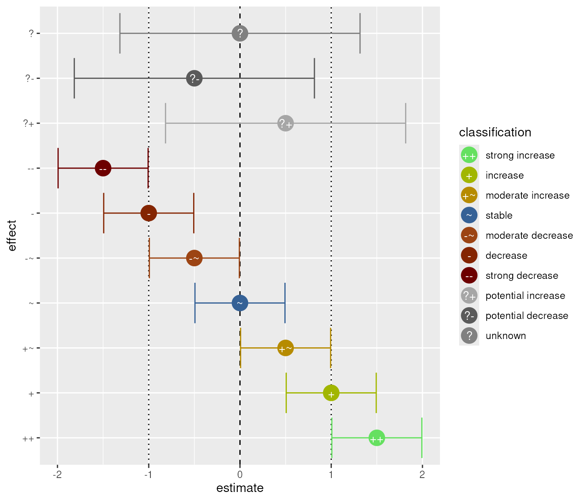
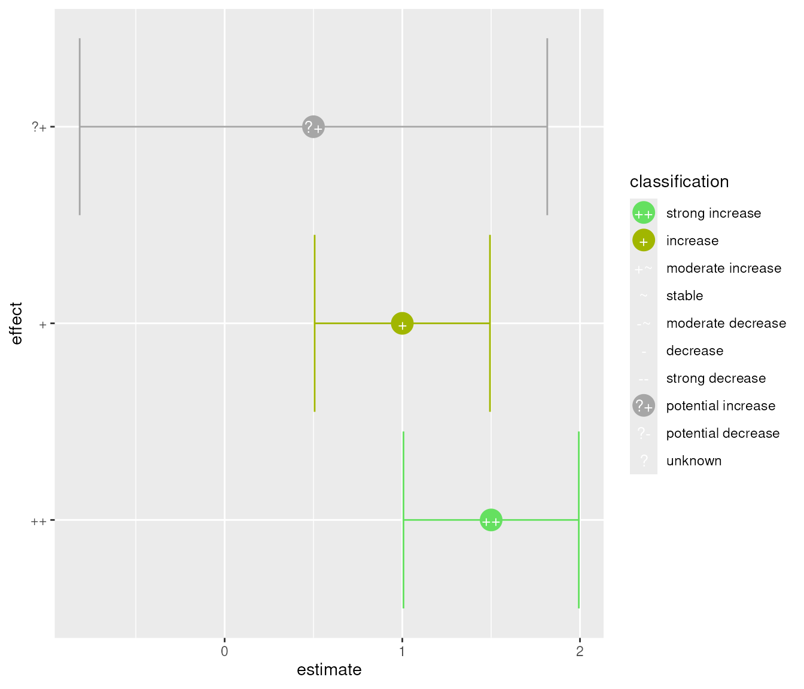
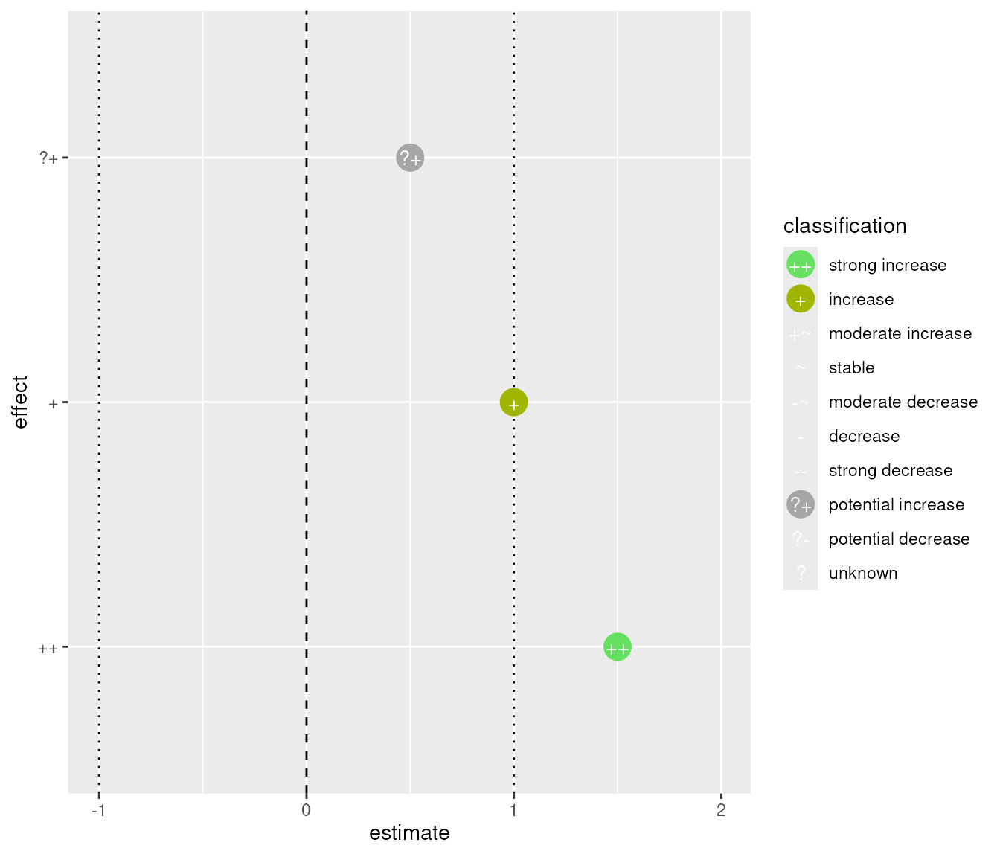
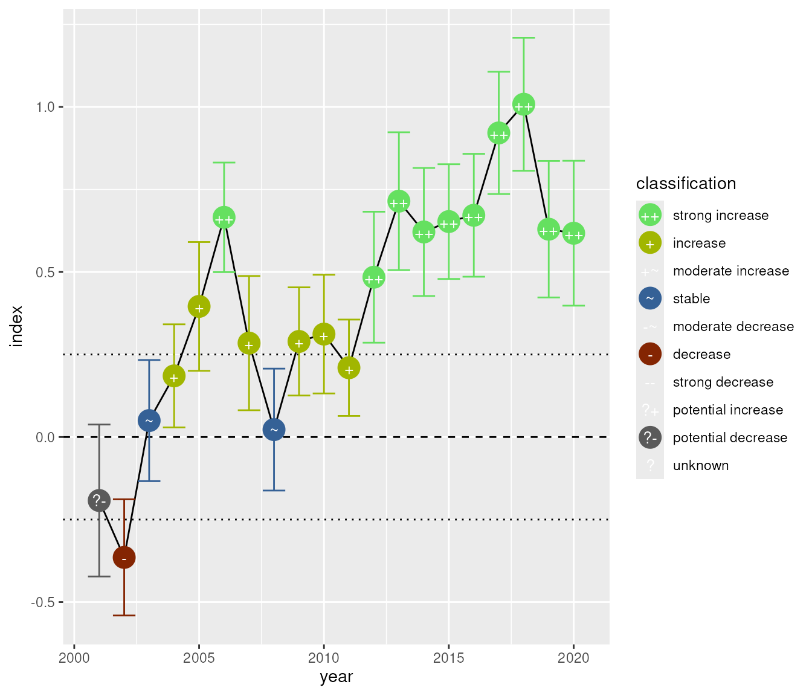
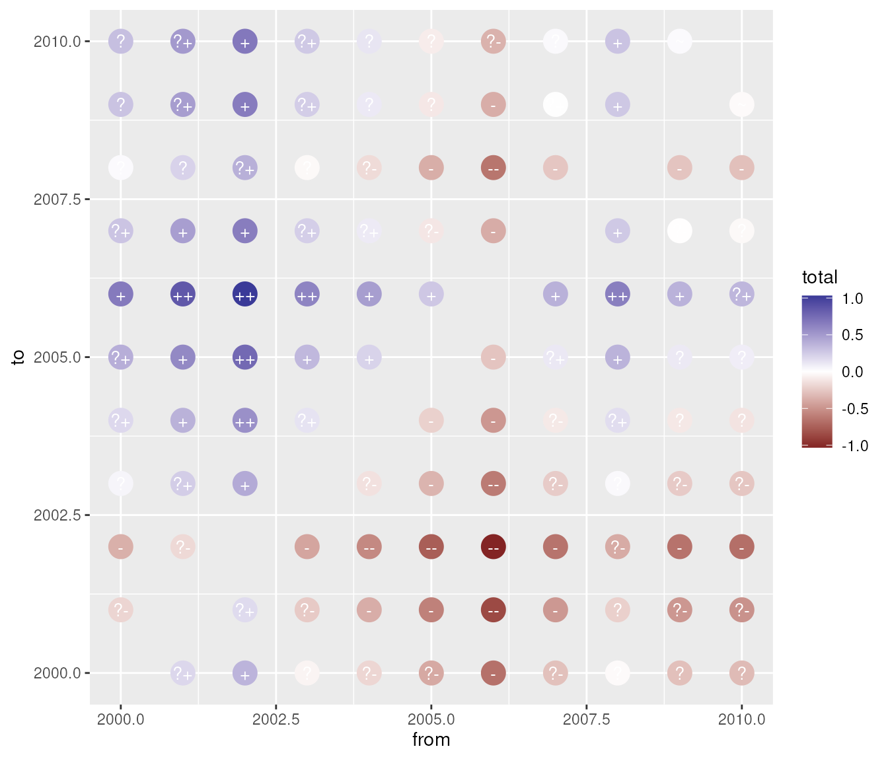
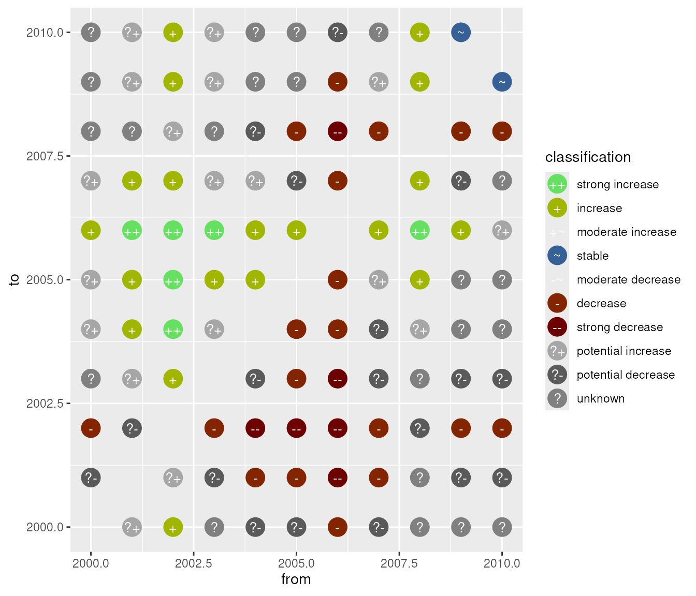

A scale for effect points
scale_effect(
...,
detailed = TRUE,
signed = TRUE,
fill = TRUE,
colour = TRUE,
drop = FALSE,
labels = class_labels(lang = "en", detailed = detailed, signed = signed)
)Arguments passed on to ggplot2::scale_shape_manual
valuesa set of aesthetic values to map data values to. The values
will be matched in order (usually alphabetical) with the limits of the
scale, or with breaks if provided. If this is a named vector, then the
values will be matched based on the names instead. Data values that don't
match will be given na.value.
breaksOne of:
NULL for no breaks
waiver() for the default breaks (the scale limits)
A character vector of breaks
A function that takes the limits as input and returns breaks as output
na.valueThe aesthetic value to use for missing (NA) values
TRUE indicates a detailed classification();
FALSE a coarse_classification().
Defaults to TRUE.
TRUE indicates a signed classification;
FALSE a classification with remove_sign().
Defaults to TRUE.
return ggplot2::scale_fill_manual()
Drop unused levels.
This is always FALSE.
Changing this argument has no effect.
We provide the argument to avoid errors in case the user sets the argument.
the labels for the legend.
Other ggplot2 add-ons:
stat_effect(),
stat_fan()
# All possible classes
z <- data.frame(
estimate = c(-0.5, 0, 0.5, 1.5, 1, 0.5, 0, -0.5, -1, -1.5),
sd = c(rep(0.8, 3), rep(0.3, 7))
)
z$lcl <- qnorm(0.05, z$estimate, z$sd)
z$ucl <- qnorm(0.95, z$estimate, z$sd)
classification(z$lcl, z$ucl, threshold = 1) -> z$effect
c(
"?" = "unknown\neffect", "?+" = "potential\npositive\neffect",
"?-" = "potential\nnegative\neffect", "~" = "no effect",
"+" = "positive\neffect", "-" = "negative\neffect",
"+~" = "moderate\npositive\neffect", "-~" = "moderate\nnegative\neffect",
"++" = "strong\npositive\neffect", "--" = "strong\nnegative\neffect"
)[as.character(z$effect)] -> z$x
z$x <- factor(z$x, z$x)
z$display <- paste(
"estimate:", format_ci(z$estimate, lcl = z$lcl, ucl = z$ucl)
)
# Simulated trend
set.seed(20190521)
base_year <- 2000
n_year <- 20
trend <- data.frame(
dt = seq_len(n_year),
change = rnorm(n_year, sd = 0.2),
sd = rnorm(n_year, mean = 0.1, sd = 0.01)
)
trend$index <- cumsum(trend$change)
trend$lcl <- qnorm(0.025, trend$index, trend$sd)
trend$ucl <- qnorm(0.975, trend$index, trend$sd)
trend$year <- base_year + trend$dt
trend$display <- paste(
"index:", format_ci(trend$index, lcl = trend$lcl, ucl = trend$ucl)
)
th <- 0.25
ref <- 0
oldw <- getOption("warn")
options(warn = -1)
library(ggplot2)
theme_set(theme_grey(base_family = "Helvetica"))
update_geom_defaults("point", list(size = 5))
ggplot(z, aes(x = effect, y = estimate, ymin = lcl, ymax = ucl)) +
stat_effect(threshold = 1) +
coord_flip()

ggplot(z[3:5, ], aes(x = effect, y = estimate, ymin = lcl, ymax = ucl)) +
stat_effect(threshold = 1, ref_line = "none") +
coord_flip()

ggplot(z[3:5, ], aes(x = effect, y = estimate, ymin = lcl, ymax = ucl)) +
stat_effect(threshold = 1, errorbar = FALSE) +
coord_flip()

# plot indices
ggplot(trend, aes(x = year, y = index, ymin = lcl, ymax = ucl, sd = sd)) +
geom_line() +
stat_effect(threshold = th, reference = ref)

# plot pairwise differences
change_set <- function(z, base_year) {
n_year <- max(z$dt)
total_change <- lapply(
seq_len(n_year) - 1,
function(i) {
if (i > 0) {
y <- tail(z, -i)
} else {
y <- z
}
data.frame(
from = base_year + i, to = base_year + y$dt,
total = cumsum(y$change), sd = sqrt(cumsum(y$sd ^ 2))
)
}
)
total_change <- do.call(rbind, total_change)
total_change <- rbind(
total_change,
data.frame(
from = total_change$to, to = total_change$from,
total = -total_change$total, sd = total_change$sd
)
)
total_change$lcl <- qnorm(0.025, total_change$total, total_change$sd)
total_change$ucl <- qnorm(0.975, total_change$total, total_change$sd)
return(total_change)
}
head(trend, 10) |>
change_set(base_year) |>
ggplot(aes(x = from, y = to, ymin = lcl, ymax = ucl)) +
stat_effect(
threshold = th, reference = ref, aes(colour = total), ref_line = "none",
errorbar = FALSE, shape_colour = FALSE
) +
scale_colour_gradient2()

head(trend, 10) |>
change_set(base_year) |>
ggplot(aes(x = from, y = to, ymin = lcl, ymax = ucl)) +
stat_effect(
threshold = th, reference = ref, ref_line = "none", errorbar = FALSE
)

options(warn = oldw)